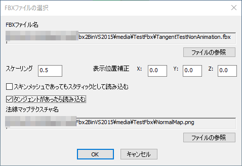
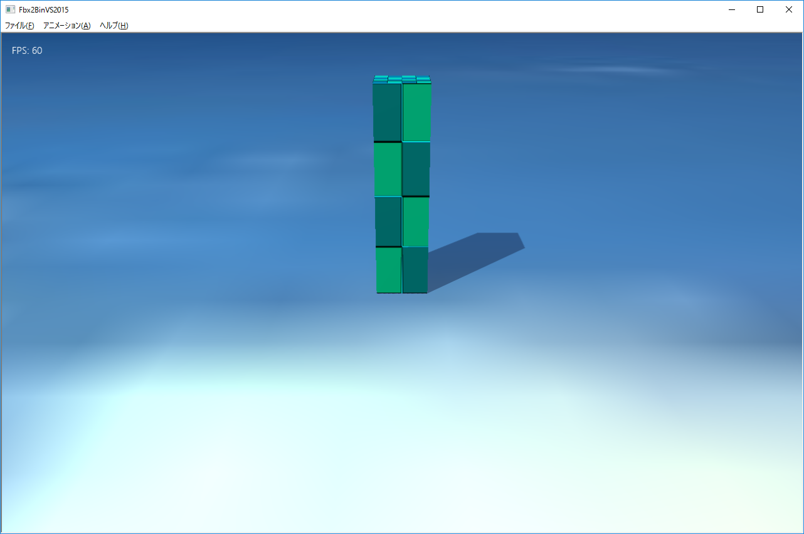

５．FBXモデル変換ツール（Fbx2BinVS2015）
５０３．タンジェント付きモデルのデータ変換
この項ではタンジェントをモデルで実装する方法を説明します。FullSample404では、タンジェントが入ってないモデルに後からタンジェントを実装する方法がサンプル化してます。
しかし、この項で説明する方法はあらかじめFBXに書きだされたタンジェントも含めデータ変換する方法です。
両者の違いは、後からの場合は自動計算で接線ベクトルを作成しますのでこまかな制御ができません。しかしFBXにあらかじめ入っている場合は、そちらのほうがグラフィック作成者の手法が入る形です。
タンジェント付きスタティックモデルのデータ変換
前項の要領でmediaディレクトリにありますTestFbxディレクトリにTangentTestNonAnimation.fbxおよびTangentTest.fbxをFbx2BinVS2015ツールで開いてください。この２つのFBXファイルはあらかじめタンジェントが実装されているデータです。
以下は、読み込み時のダイアログです。

図0503a
図のようにタンジェントがあったら読み込むにチェックが入っていて法線マップテクスチャ名が設定されています。ファイルの参照で法線マップのテクスチャを選択できます。
また、このサンプルではスケーリングは0.5になっています。
読み込むと以下のような画面が出ます。

図0503b
これをファイル・バイナリファイルの保存すればタンジェント付きのスタティックモデルが.bmfの形で保存されます。
タンジェント付きボーンモデルのデータ変換
アニメーション付きのモデルは前項同様な方法でTangentTest.fbxを読み込みます。その際上記のように法線マップテクスチャも設定してください。こちらはアニメーション付きですのでアニメーションを実行すると以下のように、アニメーションします。

図0503c
これを保存するとアニメーションとタンジェント付きの.bmfファイルを作成できます。
以下が以上のデータをゲーム上に配置したものです。FullSample503になります。

図0503d